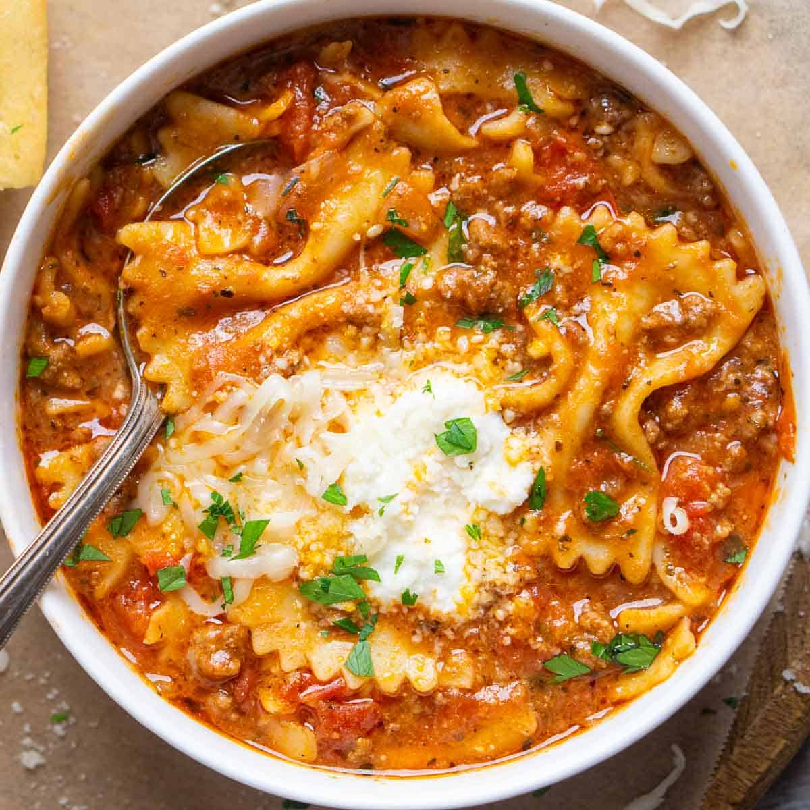

Lasagna Soup

Lasagna Soup features everything you love about lasagna
– in one steaming bowl of delicious comfort. I first shared this
recipe way back in March 2011 – the first Lasagna Soup recipe to
hit the internet! It’s a time-tested recipe, a favorite with our
family and friends. Whenever someone asks me to recommend a recipe
that’ll please the whole family, I point them straight to this one!
Ingredients
- Olive Oil
- Italian Sausage
- Yellow Onion
- Garlic
- Dried Herbs & Spices
- Canned Diced Tomatoes
- Tomato Paste
- Low-Sodium Chicken Stock
- Mafalda Pasta
- Fresh Basil
- Cheeses
Steps
- Heat olive oil in a large pot over medium heat. Add sausage
and brown for 3 minutes, breaking it up into bite-size pieces
with a wooden spoon.
- Add onion, garlic, oregano, salt, pepper, and red pepper flakes,
and cook until onion is softened and sausage is browned, about 7
more minutes.
- Stir in tomato paste and cook for 2 minutes more.
- Add diced tomatoes, bay leaves, and chicken stock. Bring just to
a boil, then reduce heat and simmer for 15 minutes.
- Meanwhile, prepare pasta in a separate saucepan according to
package directions, to el dente. Do not over cook. Drain.
- In a medium bowl, create the "cheesy yum" by combining the ricotta,
Parmesan, salt, and pepper. Set aside.
- Stir fresh basil into soup right before serving.
- To serve, add cooked pasta to individual bowls and ladle soup
over the top. Serve with dollops of cheesy yum and additional
shredded mozzarella.